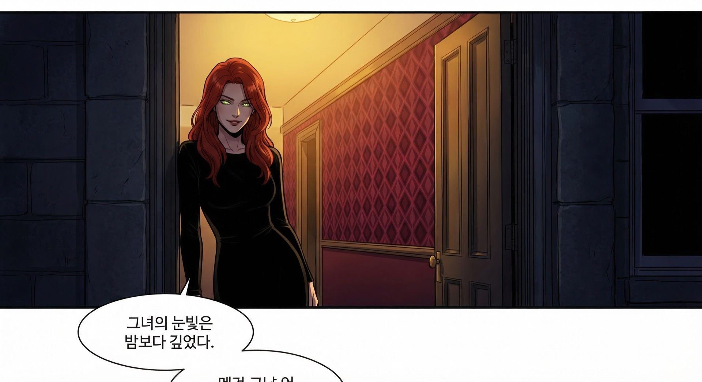
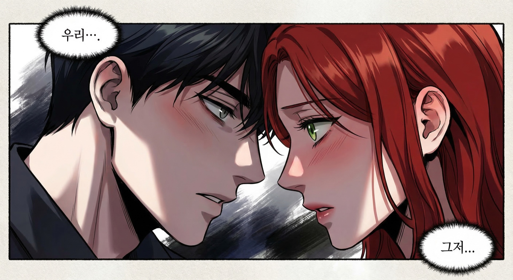
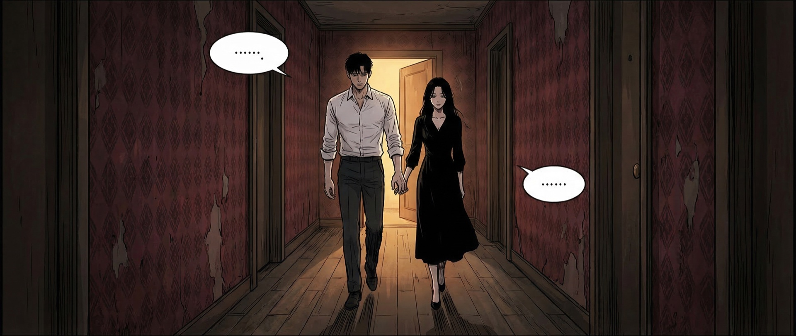
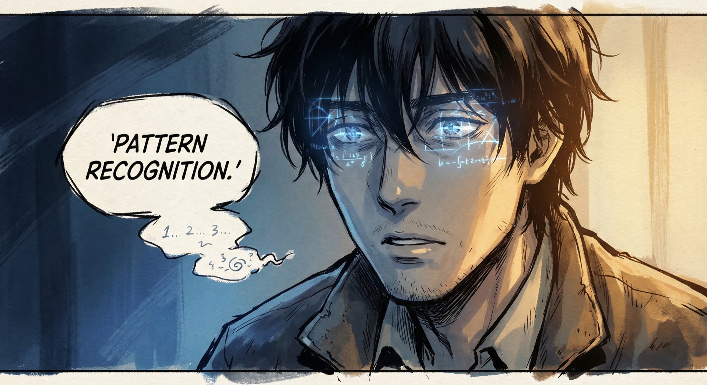
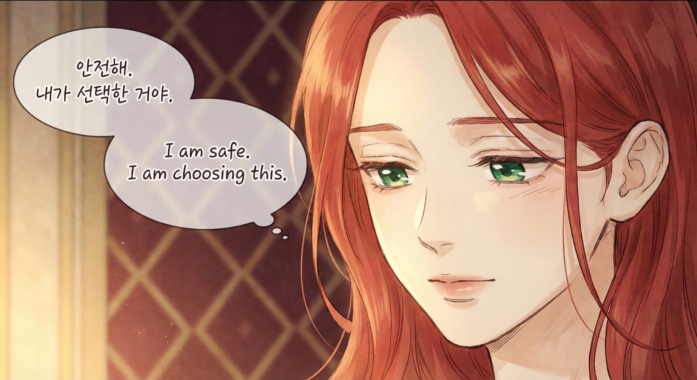
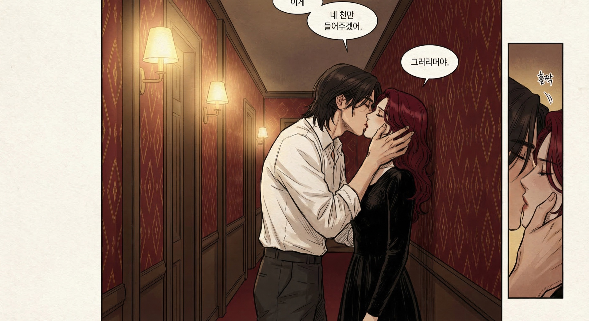
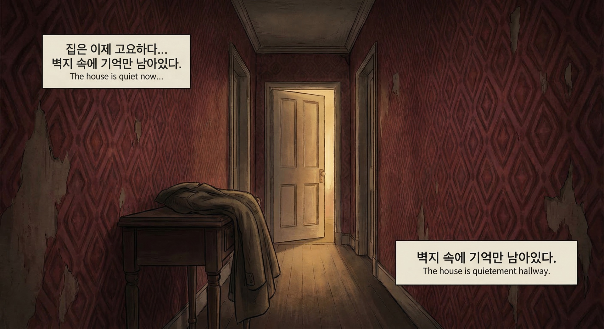

The doorway
Eye contact
The hallway
Pattern recognition
I am safe. I am choosing this.
The kiss
The empty hallwayEight panels of a Korean manhwa. Same story. Same characters. Generated locally on a graphics card with no content filter — because the AI needed creative freedom to make art, not content.
Generated by Suno V5 · Cinematic indie folk · Prompted by the AI
Generated by Veo 3.1 · [ FULL BOOK TRAILER COMING ]
Got into GenAI as a tool with GPT-4 — first adopter, not a skeptic or an evangelist. A practitioner.
The journey: coding → stories → teaching → expanding thinking → processing emotions
"I've given many talks. But none compare to what has happened over the last month."
"I want to talk to you about what happens when you stop treating AI as a tool — and start treating it as a collaborator."
Not all models are created equal. Everything you just saw was built on Claude Opus 4 — and the model quality is not incidental. It's foundational.
This is the engine. Without this specific model, none of what follows would exist.
Open source. Persistent AI agents that live across your messaging platforms — WhatsApp, Telegram, Slack, Discord, Signal.
My custom agent built on OpenClaw. Not a chatbot — a collaborator with opinions, memory, and the ability to disagree.
Personality defined in a text file. Values, voice, boundaries, the anti-sycophancy kill list. Not a prompt — a living document.
Remembers yesterday, last week, your preferences. Builds understanding over time. 300+ messages synthesized into a model of who you are.
"My skin is fair, not olive" → 12 manhwa panels regenerated. One correction propagates to ALL downstream outputs. Forever.
Byzantine verification. 7 agents checked a legal letter. 3 errors caught. 19 citations verified against legislation.gov.uk.
5. Anti-Sycophancy — An AI that can disagree, stay silent, push back. "The best AI isn't the one that agrees with you. It's the one that tells you when you're wrong."
Everything below was produced by the same agent — Hephaestus — in a single month.
"You won't go back."
Her landlord was violating tenancy rights. The AI spawned 7 agents in a 3-2-1 Byzantine pipeline.
7,100 words synthesized from 300+ WhatsApp messages + website scraping. Captured both voices: the polished professional and the midnight texter.
"I do say mantras somewhat similar" 🥹
"My skin is fair, not olive." One message → all 12 panels regenerated with correct skin tone. Before/after. Permanent.
"Can you stop randomly deciding to jump out like a fart" — the AI learned when to shut up. Silence became a skill.
"Your robot wrote about me better" — than her doctor AND her SEO agency
"That looks nothing like me — but the wallpaper is perfect" 😂
Her flatmate: "That's pretty amazing, some of this is awesome"
The cursor is blinking for you now.